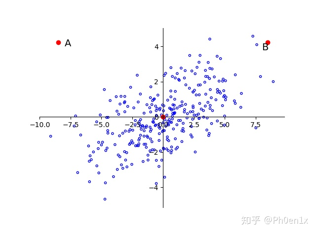
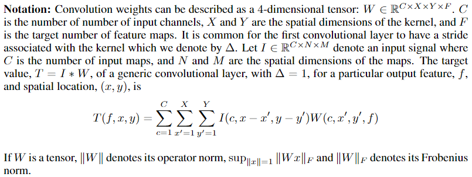
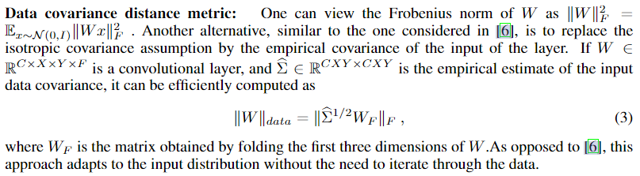

探索卷积网络的线性性质来进行推理时加速

论文：Exploiting Linear Structure Within Convolutional Networks for Efficient Evaluation
作者： Emily Denton, Wojciech Zaremba, Joan Bruna, Yann LeCun, Rob Fergus
录用情况：Neurips'2014
第一作者单位：Dept. of Computer Science, Courant Institute, New York University
笔者最近在做一些用SVD分解卷积核的小实验，并且也在想该如何设计目标函数，让重参数化这件事变成可学习的？然后我发现早在14年就有人做了相关问题的研究；笔者看来，这篇文章的贡献为：
- 给出了一种评估压缩后卷积核好坏的方式，并且通过在线学习的方式，修改了反向传播的梯度（不确定是不是这样）
- 归纳并尝试了对于高维张量的两种分解方法：SVD分解和外积分解；
- 结合聚类方法，针对浅层卷积和深层卷积的不同性质，设计了单色估计方法和双色估计方法；
- 给出一种微调方式：从最浅层开始，压缩一层，然后微调其上所有层，直至性能恢复，如此循环，看能最多压缩多少层；
作者在实验部分用了比较老的模型，仅4层卷积和3层全连接层，现在来看非常简单，但是很适合做一个demo，然而作者原始的C++代码链接已经失效了
基础知识
有关主成分分析和奇异值分解的知识在线性代数要点总结的最后部分有一些干货；
Mahalanobis distance
马氏距离用于衡量一个点\(P\)到一个分布\(D\)的距离，即\(P\)距离\(D\)的质心有多少标准差距离，因而也可以用于衡量两个分布的距离；马氏距离考虑到了数据集的相关性、并且具有尺度不变性，说人话就是，无论数据是否沿着各个轴分布，无论在各个维度上的尺度是否一致，如下图所示，马氏距离都能得到A相比于B，与分布的距离更远；

只要将原始数据平移到以原点为中心，再旋转至主成分方向再除以各个方向的方差，之后再计算欧式距离，这就是马氏距离公式的由来，设数据为\(X\in \mathbb R^{m\times n}\)，其均值为\(\mu_X\in \mathbb R^n\)，其协方差矩阵为\(\Sigma_X \in \mathbb R^{n\times n}\)，假设协方差矩阵是满秩的（即没有为0的特征值，又因为协方差矩阵半正定，意味着所有特征值为正），其特征值按照非增顺序依次为\(\lambda_1, \lambda_2, \lambda_n\)；\(Y\)是\(X\)平移至原点为中心后再旋转至主成分方向的形式，即\(Y=U^TX\)，其中\(U\)是单位正交矩阵，使得\(\text{diag}\{\lambda_1,\cdots,\lambda_n\}=U^T\Sigma_XU\)，对于数据点\(x\)，其到\(X\)的马氏距离的平方为： $$ \[\begin{aligned} D_M^2 &= \frac{U^T(x_1-{\mu_X}_1)}{\lambda_1} + \cdots + \frac{U^T(x_n-{\mu_X}_n)}{\lambda_n}\\ &= (y_1, \cdots, y_n)\text{diag}\{\frac 1 {\lambda_1}, \cdots, \frac 1 {\lambda_n} \} \left( \begin{array}{c} y_1\\ \vdots\\ y_n \end{array} \right)\\ &= y^T(U^T\Sigma_XU)^{-1}y\\ &= (x-\mu_X)^TUU^T\Sigma_X^{-1}UU^T(x-\mu_X)\\ &= (x-\mu_X)^T\Sigma_X^{-1}(x-\mu_X) \end{aligned}\]\[ 因此，点$x$到分布$X$的马氏距离为： \] D_M = \[ 如果$x$与$y$是两个服从同一分布且协方差矩阵为$\Sigma$的随机变量，则他们的距离为： \] D_M = $$ 如果协方差矩阵是单位矩阵，则退化成欧式距离；如果协方差矩阵是对角矩阵，则退化成归一化的欧氏距离；
度量学习
详见西瓜书第10章；
Dirac distribution
这种分布是理想电荷的分布：集中在一点。详见小时百科 - 狄拉克\(\delta\)函数。笔者理解为，实现时即one-hot编码；
矩阵的范数
\[ ||A||_p = (\sum_{i,j}|a_{i,j}|^p)^{1/p} \]
其中，\(||A||_F=||A||_2\)
方法
符号定义

估计度量
我们希望获得一个\(\tilde{W}\)，来估计网络中的\(W\)，能够在减少计算量的情况下保持性能；一个非常朴素的想法是最小化\(||\tilde W - W||_F\)，但是，这假设了在模型权重张量上每个位置的参数都对预测做出均等的贡献，这是不合理的；作者提出了两种度量：
这两种度量无非都是在给\(W\)加权，然后预测到这个加权的张量的一个近似常量，对于文中使用的SVD分解，这不是一个可迭代的算法（不能利用pytorch的自动微分偷懒了），因此直接把近似的目标设置为加权后的\(W\)，得到的结果再乘以权重的倒数即可；
马氏距离度量
记\(\Theta = \{W_1, \cdots, W_S\}\)是\(S\)层网络的参数，\(U(I;\Theta)\)是网络对于输入图像\(I\)的softmax层的输出（各个类别的概率）；大小为\(N\)的训练集，训练对记为\((I_n, y_n)\)，记\(U(I_n;\Theta)\)中概率最高的而索引不等于真实标签\(y_n\)的\(h\)个索引组成序列\(\{\beta_n\}\)，那么对于第\(s\)层，在反向传播过程中为权重\(W_s\)计算一个（额外的）导数项： \[ d_{n,l,s}= \nabla_{W_s}(U(I_n;\Theta)-\delta(i-l)), n\le N, l\in \{\beta_n\}, s\le S \] 其中，\(\delta(i-l)\)是以\(l\)为中心的狄拉克分布，应该就是在\(l\)为1其他位置为0的one-hot编码向量；
笔者认为，作者的意思是在一般的损失函数中添加了一个正则项（但只是在推理时计算梯度），目的是表示各层权重的各个位置对于避开那几个“最危险”的错误的能力； \[ \frac 1 2\sum_{n}^N\sum_{l\in \{\beta_n\}} ||U(I_n;\Theta)-\delta(i-l)||_2^2 \] 有了这个正则项之后，作者再来计算\(\tilde W\)到\(W\)的马氏距离，将\(\tilde W - W\)可以展平成一个高维向量\(w\in \mathbb R^P\)，其导数\(d\)也可以展平成同样长度的向量，而对于\(N\)个样本在\(h\)个易错位置得到的正则化损失在\(s\)层的导数是一个基数为\(N\times h\)的导数向量的集合\((d_{n,l,s})_{n,l}\)，\(\Sigma \in \mathbb R^{P\times P}\)是导数集合的协方差矩阵，精确的马氏距离为： \[ ||\tilde W - W||^2_{maha} = w^T\Sigma^{-1}w \] 考虑到求\(\Sigma^{-1}\)的成本极高，因此作者进行了简化，即只使用\(\Sigma\)的对角线部分（\(P\)个维度的方差），因此，近似的马氏距离为： \[ ||\tilde W-W||_\widetilde{maha} = \sum_p^P\alpha_pw_p, \ \ \text{where} \ \ \alpha_p = \sqrt{\sum_{n,l}d_{n,l,s}(p)^2} \] 我们可以定义变量代换，\(\tilde W' - W’ = \alpha .* \tilde W - \alpha .* W\)，则继续使用L2 norm，最小化\(||\tilde W'-W'||_2\)得到\(\tilde W'\)，则\(\tilde W = \alpha^{-1}.*\tilde W'\)；
数据协方差度量

低秩矩阵分解估计
高维张量的分解
对于张量\(W\in \mathbb R^{m\times n\times k}\)，首先将后两个维度合并成一个维度，使用SVD估计\(\tilde W_m \in \mathbb R ^{m\times (nk)}\)，\(\tilde W_m \approx \tilde U \tilde S \tilde V^T\)；之后再对\(\tilde V\in \mathbb R^{n\times k}\)使用SVD；记两次奇异值分解保留的秩分别为\(K_1\)，\(K_2\);
另一种方法是使用矩阵的外积分解，最小化： \[ ||W-\alpha\otimes\beta\otimes\gamma||_F \] 其中\(\alpha\in \mathbb R^m\), \(\beta \in \mathbb R^n\), \(\gamma \in \mathbb R^k\)；如果是对于秩为\(K\)的矩阵进行分解，只需要将\(W\)分解为多个外积之和；、
论文中给出了参考文献和实现细节，再次不再赘述；
单色卷积估计
对于某层卷积权重\(W\in \mathbb R^{C\times X \times Y\times W}\)，记第\(w\)个卷积核为\(W_f \in \mathbb R^{C\times (XY)}\)；首先使秩为1的SVD，得到\(\tilde W_f = \tilde U_f \tilde S_f \tilde V_f^T\)；之后为了进一步压缩，作者观察到，每个卷积核的\(C\)的通道也是比较冗余的，可以投影到\(C'\)维的空间；对\(\tilde U_f \in \mathbb R^{C\times 1}\)使用聚类，得到\(c_f\)个聚类，因此\(\tilde W_f = \tilde U_{c_f} \tilde S_f \tilde V_f^T\)其中\(\tilde U_{c_f}\)是原左奇异向量所在聚类的聚类中心；
双色卷积估计
除了卷积核各个通道间的冗余性，还有可能存在不同卷积核之间的冗余性。因此在双色方法中，作者首先对\(W_C\in \mathbb R^{C\times (XYF)}\)进行聚类，得到\(a\)个类别，之后再对\(W_F\in \mathbb R^{(CXY)\times F}\)进行聚类，得到\(b\)个类别，这样我们可以将\(W\)压缩为\(a\times b\)个$W_SR^{C(XY)F}$3D张量，再使用先前的SVD分解或者外积分解即可；
上述使用到的聚类，都是在每次迭代中平衡各个类别个数的（各个类数量相同），这两利于并行化
微调
相比于设计度量学习中的度量目标，作者还尝试了一种简单粗暴的方式，仅仅使用最简单的度量为目标进行逐层分解，之后冻结分解层及其先前的层，微调后面的层至性能恢复，然后再继续分解下一层；实验证明，这种方式，，要比手工设计的度量性能更好；
参考链接
深入浅出的模型压缩：你一定从未见过如此通俗易懂的 Slimming 操作，这里有一些有关模型压缩论文列表，有空可以看一看